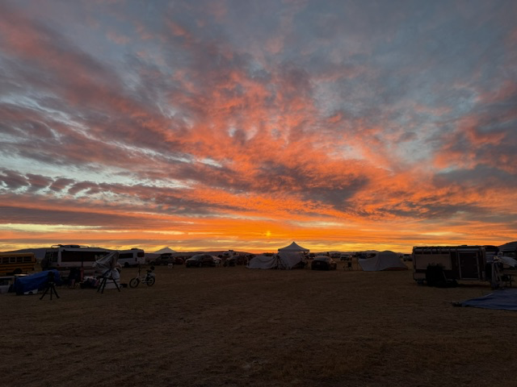
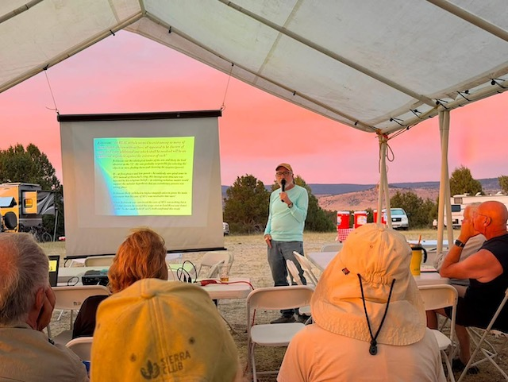
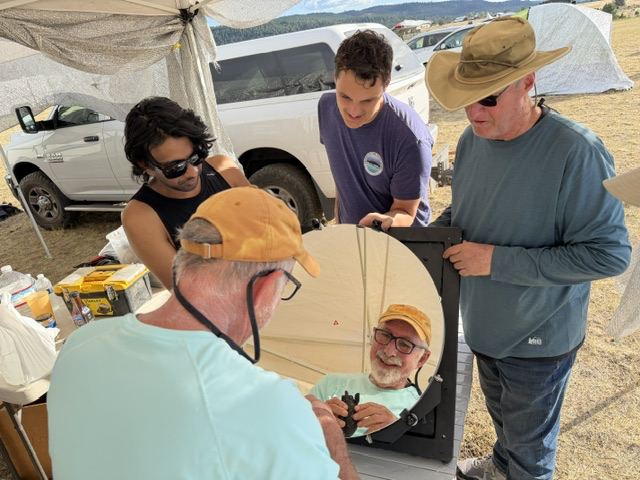
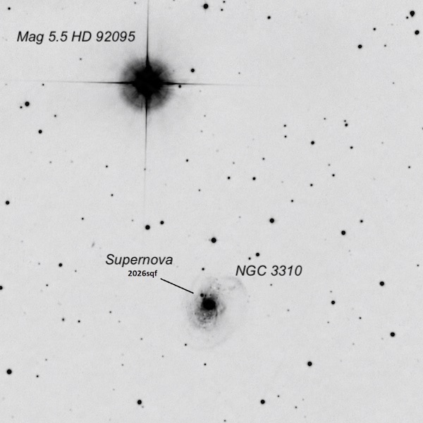
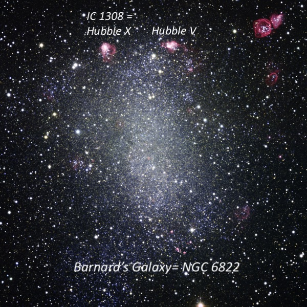
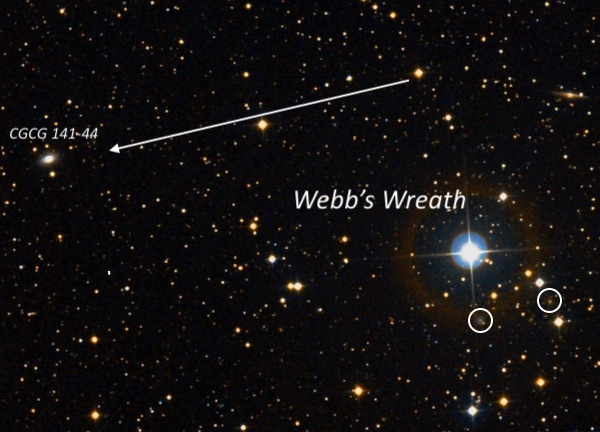
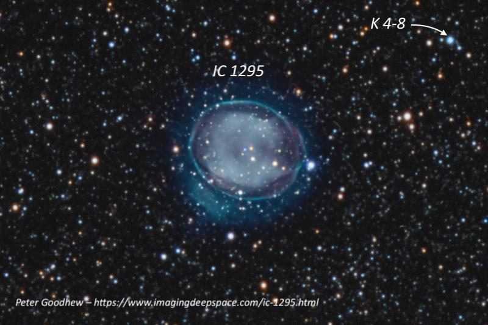
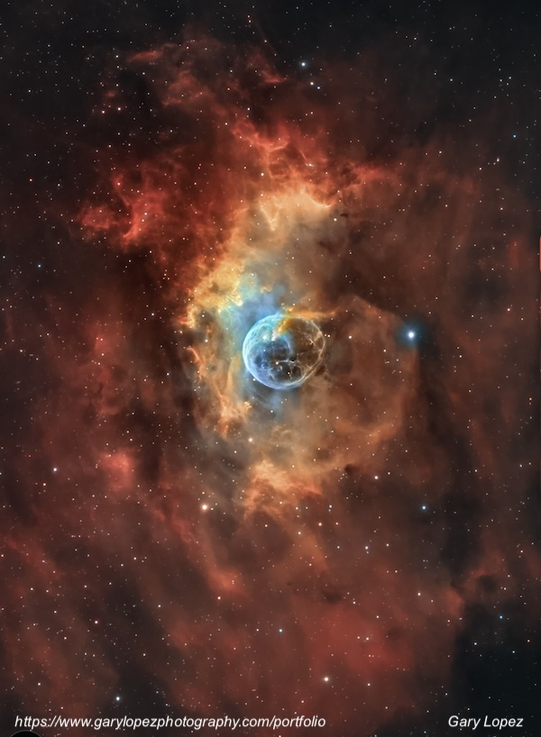

GSSP, July 10-14, 2026
The weather forecast for this year’s GSSP looked pretty lousy, with perhaps three of the four nights predicted to be cloudy. The only confidently clear night was Friday, the night before the star party officially opened. But I’ve attended every event that’s been held at the Albaugh's Frosty Acres ranch on the Modoc plateau (elevation 4312 feet) since 2008, as well as the earlier versions at Lassen National Park. I’ve always had a great time, whether it was more ‘Star’ or more ‘Party’. So, I didn’t give much thought to cancelling due to the weather.
Just as I was ready to leave home on Friday morning (the 10th), I received a panicked call from Alan Agrawal telling me that Howard Banich, who was the speaker on Monday night, had to cancel at the last minute, and he wanted to know if I could fill in. I had given a talk (as did Alan) at last year’s GSSP, but I told him that I was happy to step in for Howard. The topic I picked (while driving up) was the discovery of spiral nebulae (specifically M51) by Lord Rosse in 1845, and how preconceived ideas about the nature of faint fuzzies influenced those observations. The audience seemed to enjoy the discussion, despite a partial rainbow upstaging me midway through the talk.
As it turned out, I had two perfectly clear nights to observe with my 24-inch StarStructure — Friday and Tuesday, and another with sucker holes on Sunday. I took advantage of most of the available hours, observing to nearly 3:00 on Friday and Tuesday, and viewed a wide range of objects, many of which I selected from Akarsh Simha’s GSSP 2026 Observing List.
Attendance at the star party was down significantly because of the forecast. Many attendees also left before Tuesday night, which turned out to be excellent. Even on the cloudy days, we had some spectacular sunsets and sky phenomena. On Monday I spent a few hours at the spectacular Burney Falls, returning in time to finish up my presentation that evening.


I had made arrangements with Howard to clean my rather filthy mirror during the star party using his excellent fingertip technique. In his absence, Akarsh asked on Tuesday afternoon if I’d like to work our fingertips in tandem to remove the layer of dust on the mirror. Alan Agrawal happened to be at Adin Supply at the time, so we asked him to pick up some distilled water and we teamed up on a careful mirror cleaning. After rinsing well with distilled water, Akarsh blew the final beads of water off the mirror with a hand blower.

NGC 3310 = Arp 217
10 38 45.8 +53 30 10
Size: 3.1´ × 2.4´; Magnitude V = 10.8
Although this Ursa Major galaxy was sinking in the northwest, even by the end of astronomical twilight, I wanted to see a new type II core-collapse supernova called SN 2026sqf that was discovered just a couple of days ago! Instead of being picked up in an automated supernova search, it was discovered by amateur Patrick Wiggins. This is the fourth recorded supernovae (1974, 1991, 2021, 2026) in the past half century in NGC 3310, a starburst galaxy.
When I took a look, it was a “prominent” mag 12.8 star that was obvious just NE of the core (a few nights later it brightened further). Using 329×, the galaxy is dominated by a very bright core with a stellar nucleus. The core is surrounded by a much lower surface brightness halo. At 457×, the core had an uneven texture and was slightly brighter on the NE side near the supernova (images show this is the root of the northern spiral arm).

Barnard’s Galaxy = NGC 6822
19 44 58.3 -14 48 03; Sagittarius
Size 15.5´ × 13.5´; Magnitude V = 8.8; Surf Br = 14.5
I’ve observed Barnard’s Galaxy previously in a wide range of apertures, including my 80mm finder, which shows the galaxy just fine at 25x, and even as a threshold object in 15×50 image-stabilized binoculars. So, aperture is really unnecessary as far as viewing the large, elongated glow that extends about 15΄ N-S. The key is to frame the galaxy with plenty of space around it. A 21mm Ethos (125×) with a 48΄ true field did the trick.
At this power, I could see the two brightest H II regions at the north end of the galaxy, Hubble V and IC 1308 = Hubble X. Increasing to 327×, Hubble V was seen (unfiltered) as a fairly bright 20” to 25” knot forming the NW vertex of a triangle with a mag 12.4 star 1' SE and a mag 13.6 star 1' SSE. I called over John Hoey and Muriel Holzer, who were observing nearby to take a look, and John noticed that Hubble V and the two stars formed an arrowhead that “pointed” directly to Hubble X, a similar sized knot just 3΄ east.

Antares = ADS 10074
16 29 24.5 -26 25 55
Components: 1.0/5.4 at 2.6" separation
The 1st-magnitude red supergiant Antares is a binary (GNT 1) with a mag 5.4 companion known as Antares B. The companion is a blue-white main-sequence star (B2.5-type) with a period of roughly 1.200 to 2,500 years. Due to the large difference in brightness and fairly close separation of 2.6", the companion can be a tough object if the seeing is rough.
Johann Tobias Bürg first reported Antares to have a companion star during a lunar occultation on April 13, 1819, although his report wasn’t widely accepted and generally dismissed as a possible atmospheric effect. Scottish astronomer James William Grant observed the companion from India on July 23, 1844. It was independently discovered by Ormsby M. Mitchel in 1846 and finally, measured by William Rutter Dawes with a 6-inch refractor in April 1847.
The seeing was predicted to be below average on Friday night, but since I used Antares as an alignment star, I took a close look at 229× and found it cleanly split in moments of better seeing using an 8-inch off-axis mask (there was no problem at full aperture). Akarsh’s estimate of needing a 12-inch aperture is excessive, as I’ve spotted it a few times in a 6-inch.
Webb’s Wreath and CGCG 141-44
18 02 22 +26 18 36
Size: 11΄ × 7΄
The Reverend Thomas William Webb (nothing to do with the JWST) was the author of the classic Celestial Objects for Common Telescopes, first published in 1859, and the co-discoverer of NGC 7027, the bright Jewel Bug planetary nebula. In the fourth edition (1881) of his famous guidebook, Webb described a “wreath of 11th magnitude stars” in Hercules. He was referring to a well-defined semi-circle of 11th-magnitude stars open to the west with a 7th-mag star on the south end. Usually, though, Webb’s Wreath is taken as a larger 11΄ × 7΄ oval.
This DSS2 image shows Webb’s Wreath with south up, roughly how it appeared in the eyepiece at 125×. If you draw a line through the two brighter stars at the south end, it points to my target CGCG 141-44. The galaxy was visible at 125× with a careful look (Muriel picked it out without specific directions) and was quite obvious at 327× as a small oval bracketed by two stars.
There are also two extremely faint galaxies within the Wreath that are circled on the image. I viewed these during the Texas Star Party in April 2025 through Jimi Lowrey’s 48-inch monster-dob, along with several other observers including Larry Mitchell and Stephen O'Meara.

NGC 6712
18 53 04.3 -08 42 21
Type: Globular Cluster; Size: 7.2΄; Magnitude: V = 8.2
IC 1295
18 54 37.0 -08 49 38
Type: Planetary Nebula; Size: 102" × 87"; Magnitude: V ~12.5
K 4-8
18 54 20.0 -08 47 33
Type: Planetary Nebula; Size: Stellar; Magnitude: V =14.2
NGC 6712 is a fairly bright globular set in a beautiful Scutum star field, while IC 1295 is a fairly low surface brightness planetary less than ½° ESE of the globular. These form an unusual pair of deep sky objects in the same low power field. Although the globular is several magnitudes brighter than the planetary, when I added an O III filter at 125×, the globular dimmed significantly (particularly the halo) and the planetary seemed to brighten and sharpen. The end result is that with this combination, they looked remarkably comparable! Switching to higher power, NGC 6712 resolved into dozens of stars at 327× and 457×.
I was curious about the minimum aperture to view IC 1295, so I inserted an 8-inch off-axis mask. The planetary was still seen as a fairly easy round glow unfiltered using 107× and it brightened nicely after adding an O III filter. I called John Hoey over to take a look, and as an experiment John covered roughly half the 8-inch hole and I could still detect the planetary — that brought the effective aperture down to about 5.5-inches.
We then shifted about 5´ WNW to a stellar planetary called K 4-8 within a small arc. It simply looked like any other star, but blinking with a filter it became the brightest one in the chain.

NGC 7635 = Bubble Nebula
23 20 45 +61 11 42
Size: 40´ (extended region)
Akarsh had meant this to be a visual challenge, but as one of the last of my objects on Tuesday night, I took a look at it through my night-vision device with a 7nm H-alpha filter, which transforms the surrounding field into a lacework of nebulosity. I shared this remarkable view with John and Muriel. These notes are from an earlier observation with my 14.5-inch Starmaster.
The Bubble nebula is a fascinating object at 24× and 49×. The O6.5-type ionizing star (V = 8.7) is at the center. A thin arc extends to the north and east of the star, though I wasn't able to follow a complete ring. A small, brighter piece of nebulosity that is elongated NW-SE is close west of the star, but only 30" or so in length.
A much larger loop (~7´ diameter) appears to wrap around just north of the star. It extends east and south for 180°, with a strong suggestion of a complete bubble. The eastern side is dim, but involves a 10.5-magnitude star, while a brighter 7th-magnitude star is within the weak western rim. A slightly brighter patch is in the ring on the southeast end. The southern rim is faint but not difficult. I wasn't able to trace the ring confidently along the northwest side.
The nebula is more intricate on the north side of the central star. An easy 2´ patch of elongated, mottled nebulosity is ~5´ NW of this star. Fainter, diffuse nebulosity spreads to the west and north. Immediately north of the star is a bright, irregular, mottled patch (observed at 49x) with a curved northern border. This patch is separated from the arc adjacent to the central star by diffuse nebulosity. A very small 'wing' extends southeast from its eastern end.
